你，生命中最重要的过客，之所以是过客，因为你未曾为我停留。网站首页留言板
【中国艺硕.com】李正祥伯伯书法作品第123期
发布时间：2016-05-05 12:43:10编辑：admin阅读（100）
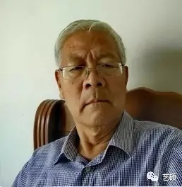简 介/Artist Profiles
李正祥，中国书协会员，辽宁省书协会员，吉林省书协会员。学习书法从米芾、王铎入手，后入魏晋追觅古风。近年来又深入研究八大山人， 追求探索超然境界。先后受到多名书界名家指点。2002年调入沈阳，受到胡崇炜先生精心指导。作品曾多次参加军内外展览。
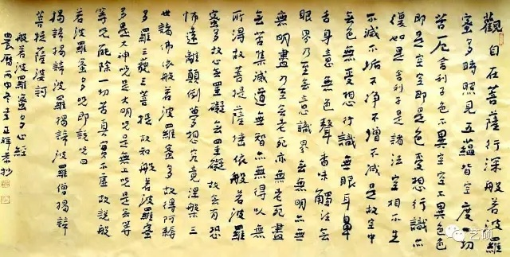 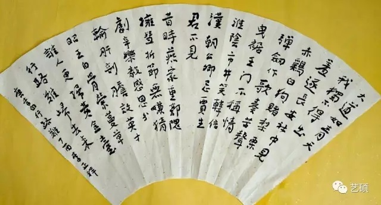 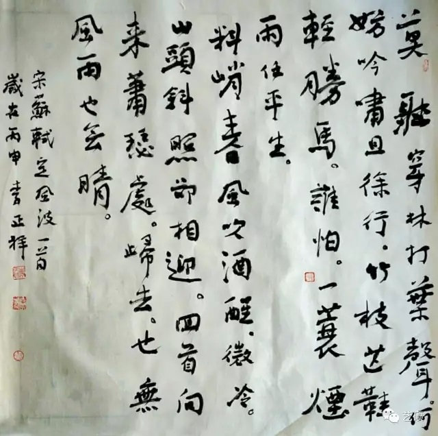 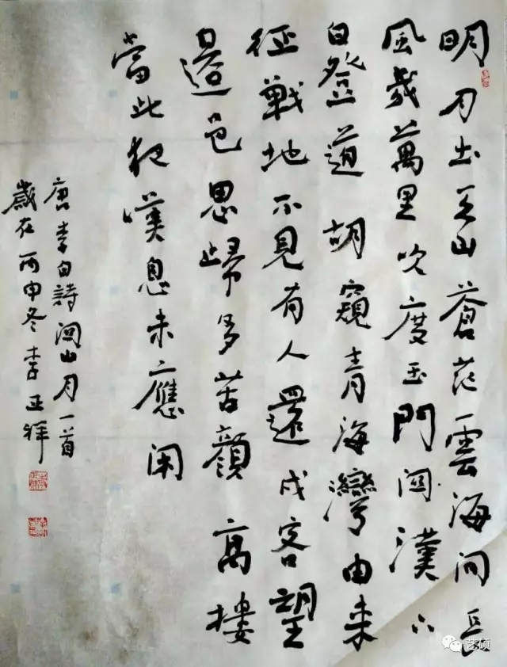 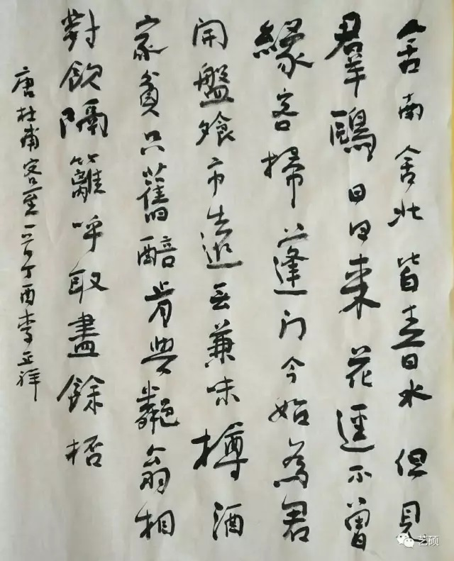 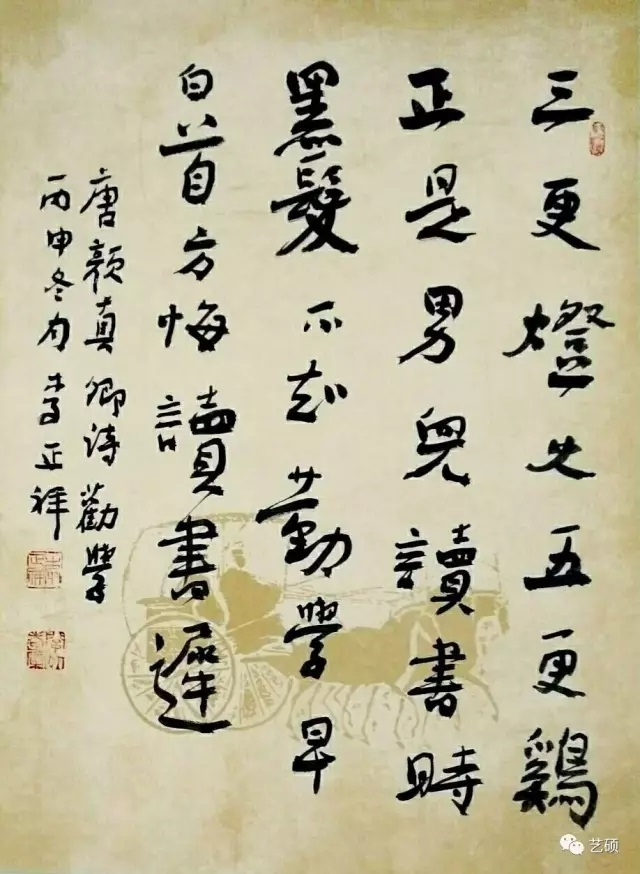 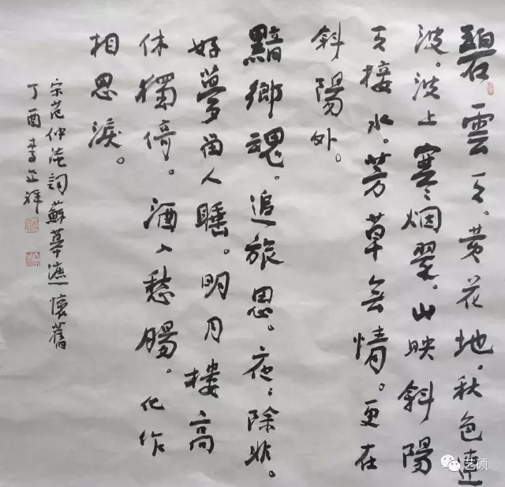 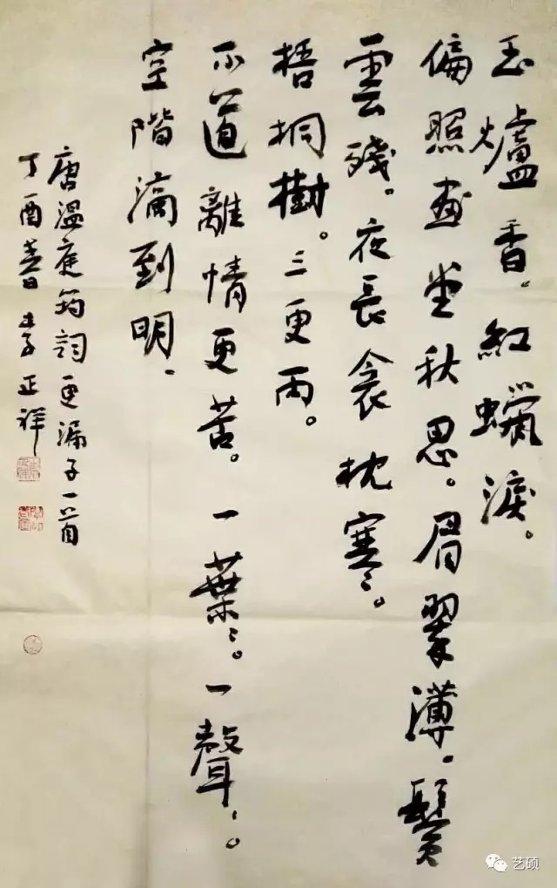 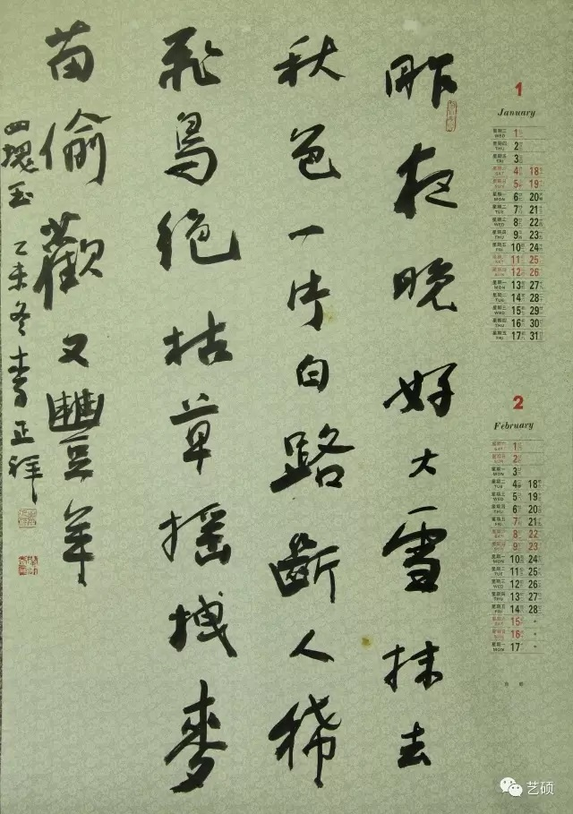 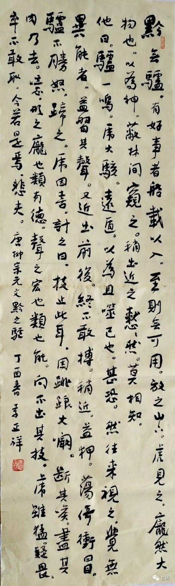 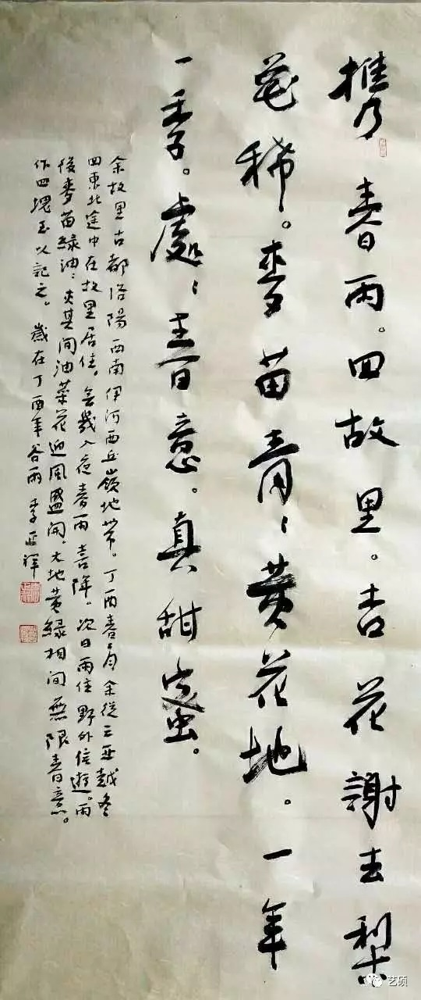 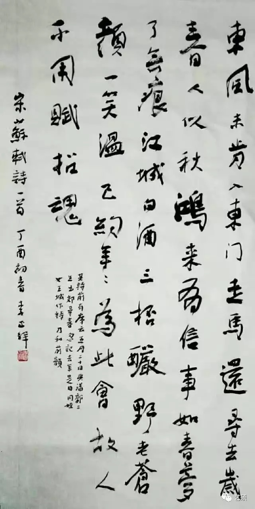 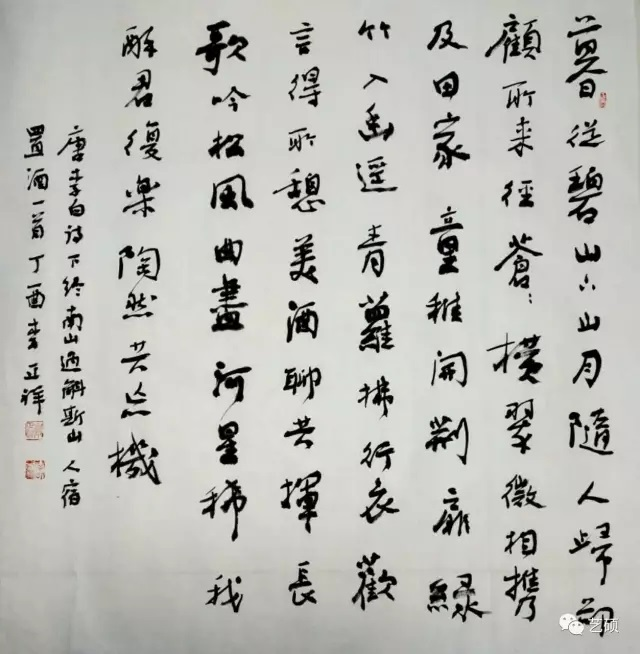 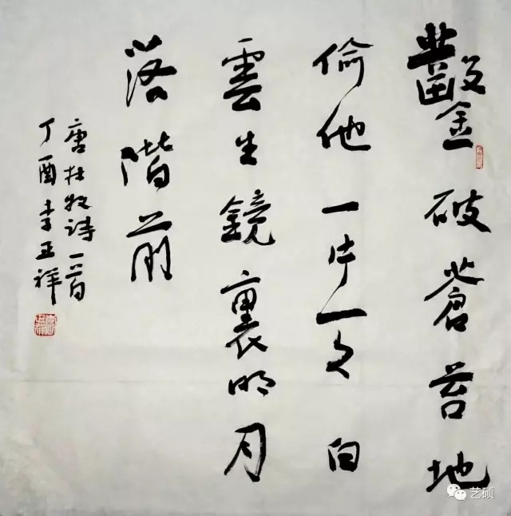 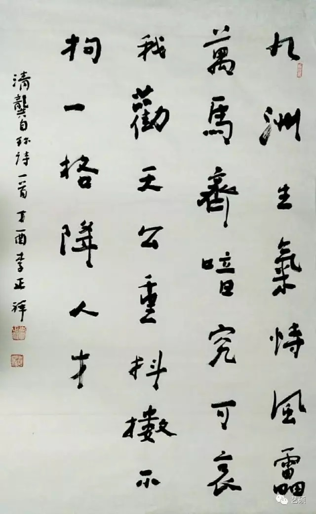书法之“法”，可以通过老师言传手教，学习古人法帖而获得。而书法之“情”，只能靠书家个人在书写过程中去体悟。 从古到今，众多书家对于书“情”的道理，各人有各人的感悟，各人有各人的理解。情是自己的，书写的时候，你不可能去抒他人之情，更不可能去表现他人的志趣，即或是书写他人的诗词，笔下流淌的也是自己的情感，表现的是自已的志向、兴趣。 基于此，在临池、创作过程中，在技法层面上注重向古人靠近，学习古人的法度和技法，同时静心思索，不断地用“心”表现自己的志趣和境界。
艺硕链接